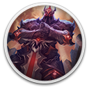

 Legend of Keepers: Prologue
Details
 |
|
| Playtime | Not Played |
| Last Activity | Never |
| Added | 12/27/2020 17:00:17 |
| Modified | 3/18/2021 17:22:17 |
| Completion Status | Not Played |
| Library | Gog |
| Source | GOG |
| Platform | PC (Windows) |
| Release Date | 3/19/2020 |
| Community Score | 80 |
| Critic Score | |
| User Score | |
| Genre | Fantasy Role-playing Strategy |
| Developer | Goblinz Studio |
| Publisher | Goblinz Studio |
| Feature | Achievements Single Player |
| Links | Forum Store Page PCGamingWiki |
| Tag | |
Description

Legend of Keepers: Prologue is a free playable alpha demo of Legend of Keepers. It's a tactical dungeon management game where you play as the bad guys! You're the Boss of the Dungeons Defending Department and need to protect the company's treasures against pesky heroes! This version of the game contains around 1-2 hours of gameplay and introduces Legend of Keepers mechanics, lore building and game strategy.
Features
- Place traps, launch spells and slay these damn heroes looting your dungeons
- Fight with your monsters and discover their unique abilities
- Hire monsters, manage your employees and your stock of traps
- Deal with employees strikes and other fun events
RogueDefender
Each run will be different but players will keep some bonuses for their master between runs. In fact, our game is a mix between Roguelite and a Dungeon Management. How did we achieve that? We've run many tests to find the perfect mix between a management and a dungeon phase!

Dungeon Phase
First, you will have to plan your defense against a group of adventurers. Check their stats and resistances, then place the best traps and monsters to defeat them! When you think your dungeon is ready, let the crawl begin!
You will then be able to watch those heroes die! It's a reversed dungeon crawler, heroes will move through your dungeon and will trigger the traps you've placed. When a group of adventurers meets a group of monsters you've positioned in your dungeon, a turn-based fight will happen!